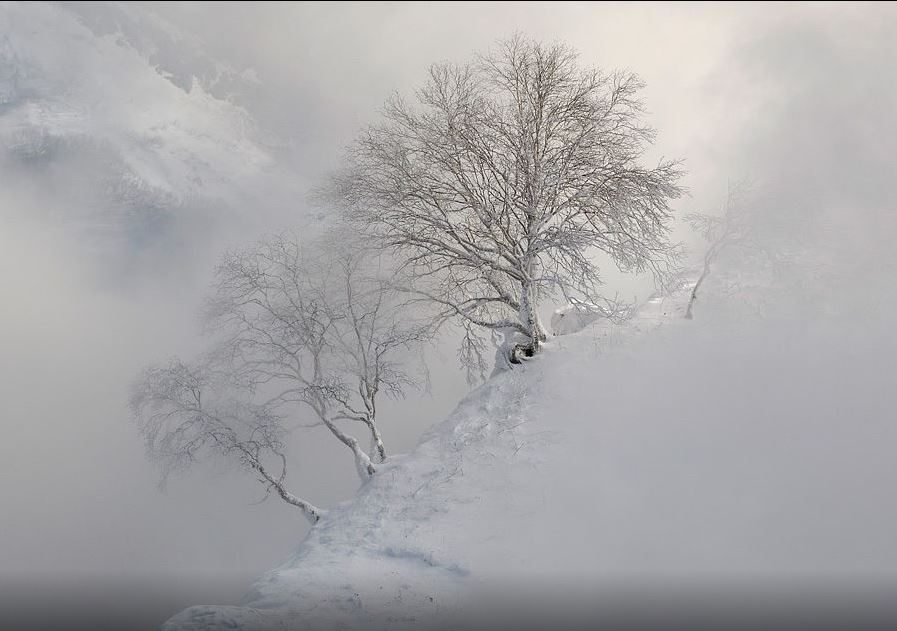
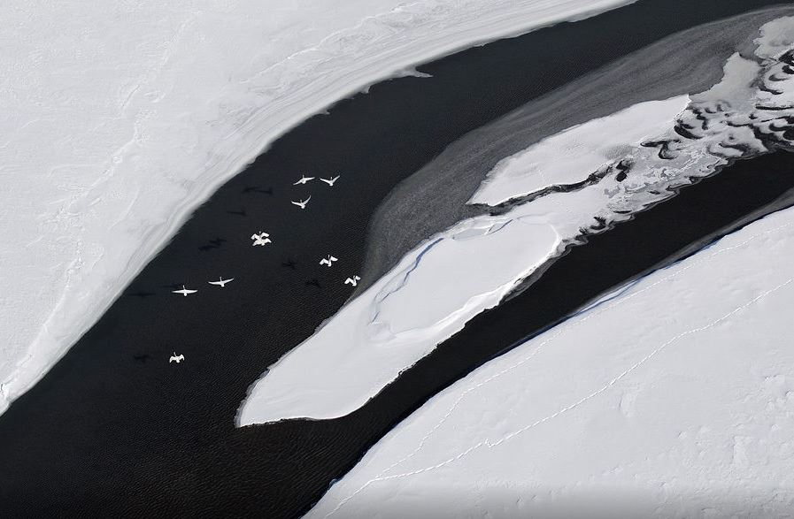
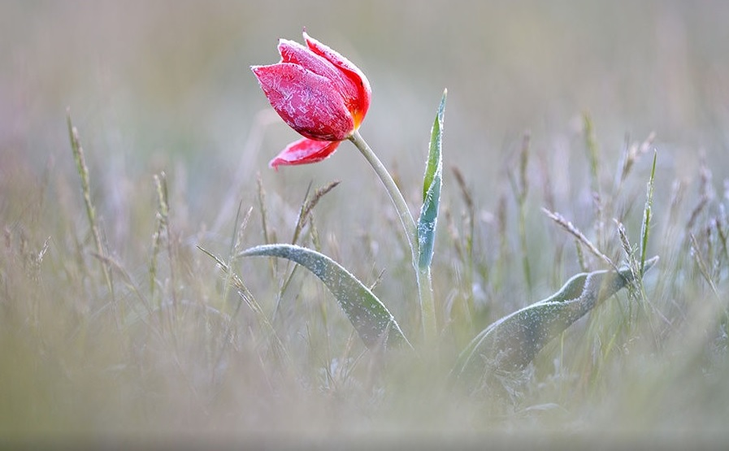
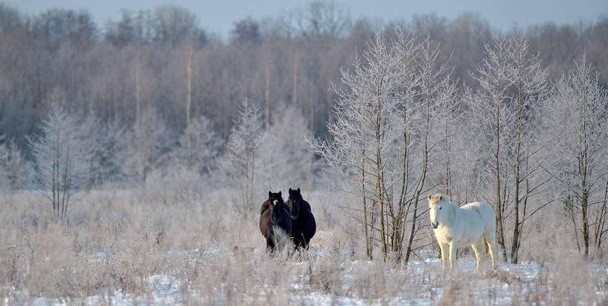

Erman's birch is "the principal" tree of the Kronotsky Nature reserve, and even the whole eastern Kamchatka. Not many people from outside know about it. I will not provide much biological details, if interested, you can easily look it up. I just want to show you this tree, fantastically tenacious of life. I fell in love with it while living on Peninsula.
Most of swans and ducks from the north-eastern part of Russia migrate to south in fall, but some stay for winter at their freezing cold homeland. During twilight hours they fly along the river searching for the safe place to spend the night. And during the bright and long moonlit nights when I hear their "trumpet" calls in my cabin, I feel if someone stirs up my feelings deep inside.
Blossom of millions of wild tulips in steppes is one of the most spectacular nature event I have ever seen. This spring I plan to participate in First Tulip Festival in Kalmykia, organized by nature activists. It will take place from 20th to 30th of April.
These are my current horses on the photo below. On the right is my favorite horse, Aza. When she was young, she was grey with dark spots, but now she appears to be all white. Aza is 26 years old, amazing horse. She feels responsibility for a rider. This is my only horse that I have never fallen from and she has never fallen under me either. All my children has learned to ride with Aza, and the youngest ones has ridden on it before they could walk. Aza and I has caught a lot of poachers in Bryans Forest Nature Reserve in the past, even those on motorized vehicles.
